Itako, Ibaraki: things to do, food and stays
Itako · Ibaraki
Itako
Highlighted on the Ibaraki map.

Stay
水郷旧家磯山邸
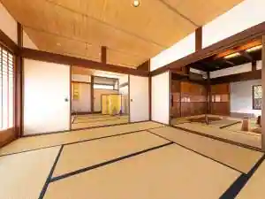
Suigo Kyuka Isoyama Tei
潮来ステーションホテル・【別館】ホテルアネックス
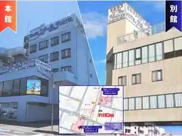
Itako Station Hotel (Bekkan) Hotel Anekkusu
Hotel in Ayame, Itako with parking.
潮来ホテル
Itako Hotel
Hotel in Ayame, Itako with business travelers and groups.
阿や免旅館
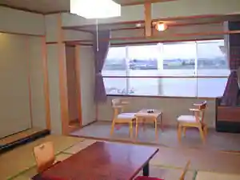
A Ya Men Ryokan
Ryokan inn at Ayamen Onsen in Itako.
ホテル新まこも
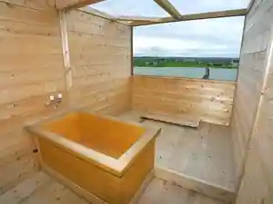
Hotel Shin Makomo
Hotel in Itako with open-air baths and parking.
亀の井ホテル 潮来
Kame No I Hotel Itako
Hotel at Urawonozomutennen Onsen in Mizuhara, Itako.
割烹旅館霞ヶ浦
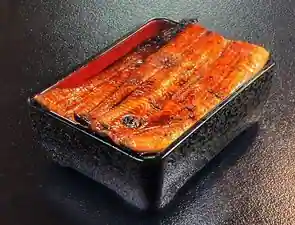
Kappo Ryokan Kasumi Ke Ura
Dining
イタリアン・ガレージ
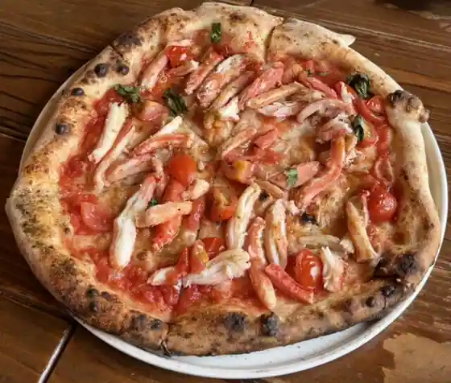
Itarian Gareji
北海とんこつ らーめん純輝 潮来本店
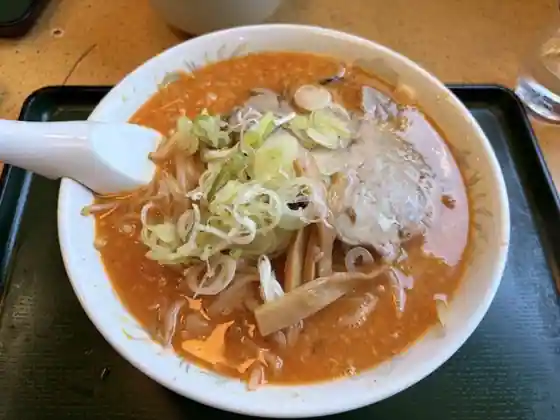
Hokkai Tonkotsu Ramen Jun Teru Itako Hon
清水屋
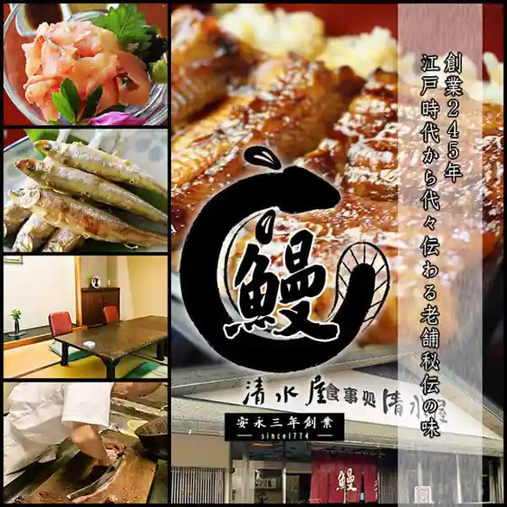
Shimizuya
おふくろ亭
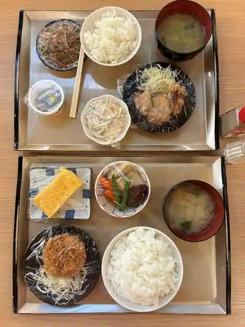
Ofukuro Tei
とんかつとん平
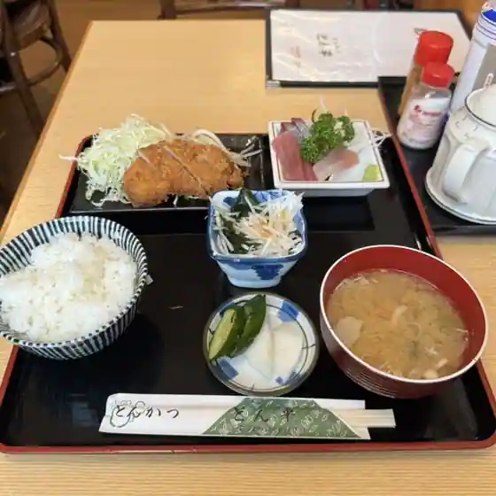
Tonkatsuton Taira
和源
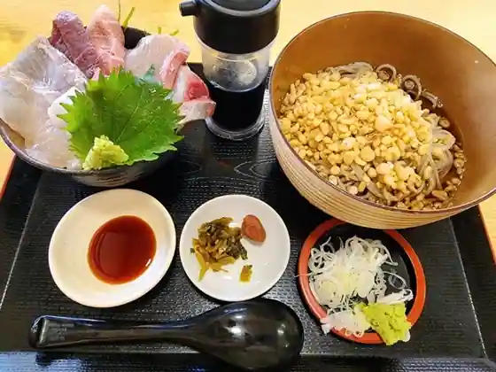
Wa Gen
手打蕎麦 しいなや
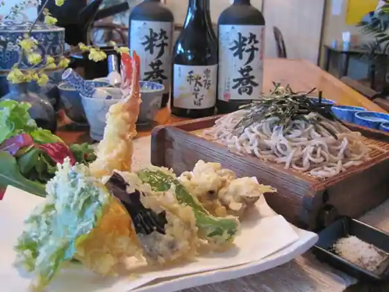
Teuchi Soba Shinaya
蔵cafe 氷菓ふわり
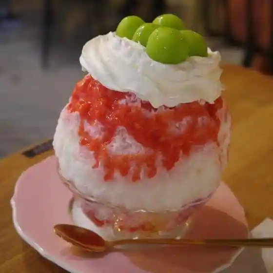
Kura cafe Hyoka Fuwari
海鮮倶楽部 清水
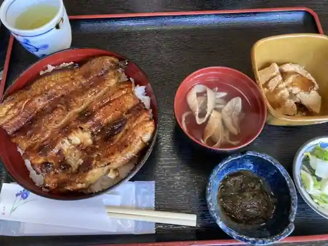
Kaisen Kurabu Shimizu
石津食堂
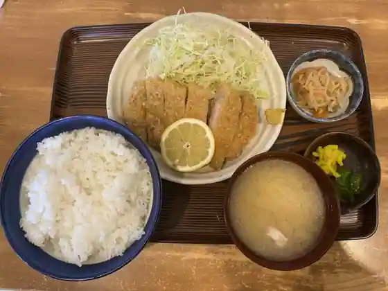
Ishizu Shokudo
潮来カントリー倶楽部
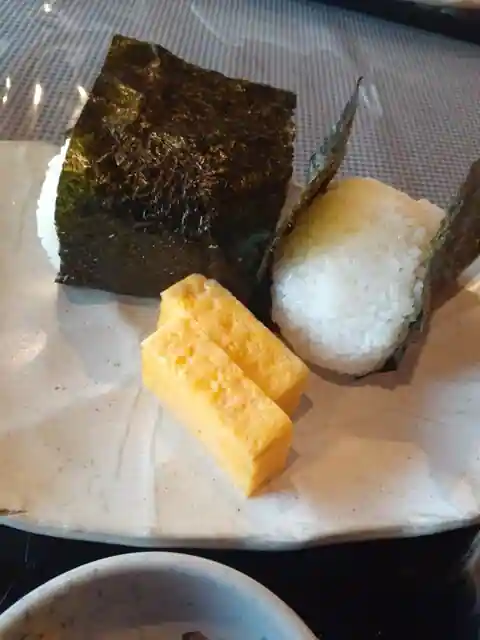
Itako Kantori Kurabu
はしや
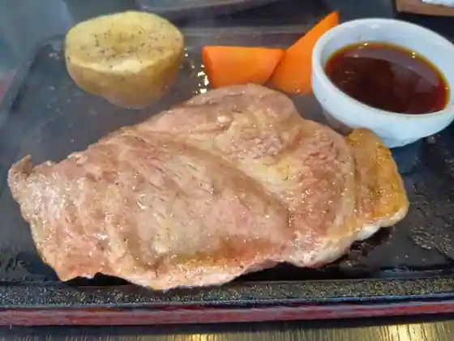
Hashiya
虹工房
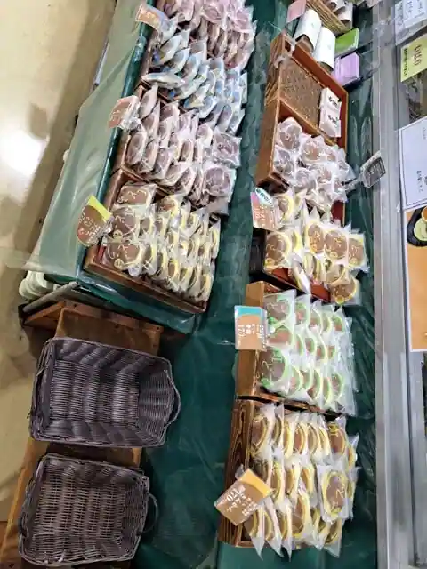
Niji Kobo
道の駅いたこ
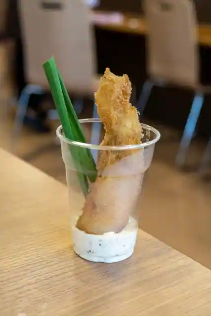
Michi No Eki Itako
錦水
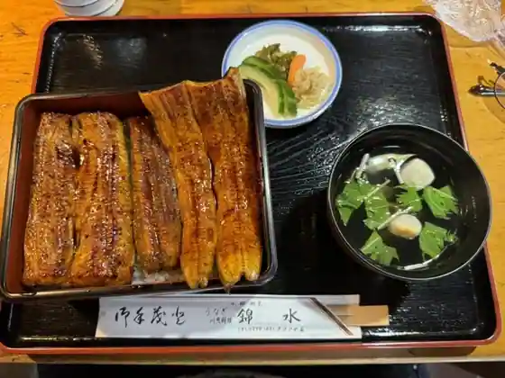
Nishiki Mizu
献上菓舗 さわた
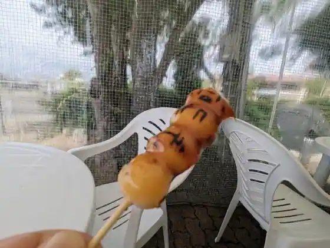
Kenjo Ka Ho Sawata
甚兵衛寿司
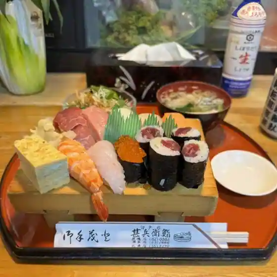
Jinbe Sushi
あじ屋
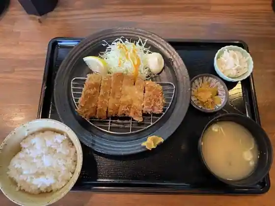
Aji Ya
マルチュー
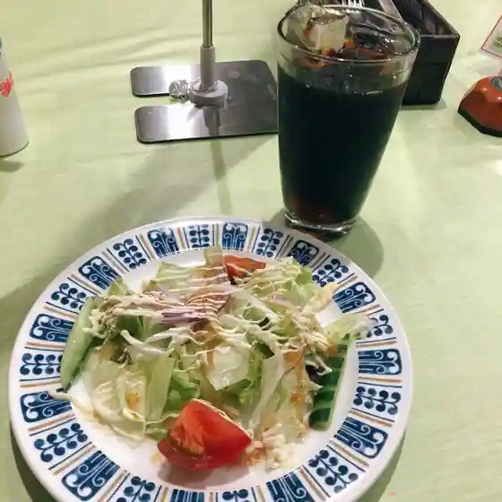
Maruchu
つか本そば店
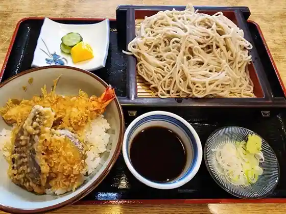
Tsuka Hon Soba
ぷちろーど
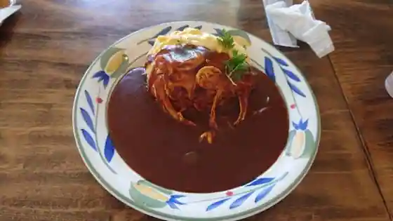
Puchirodo
チャイニーズレストランぴあ
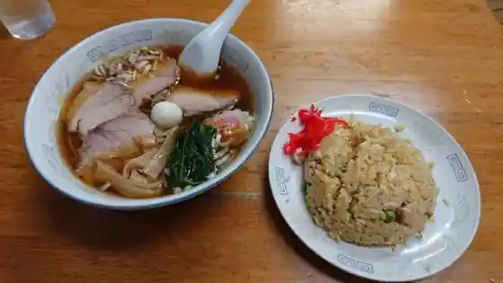
Chainizu Restaurant Pia
掌
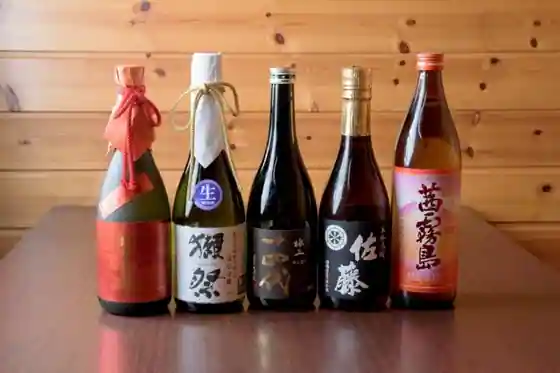
Tenohira
お菓子のおざわ
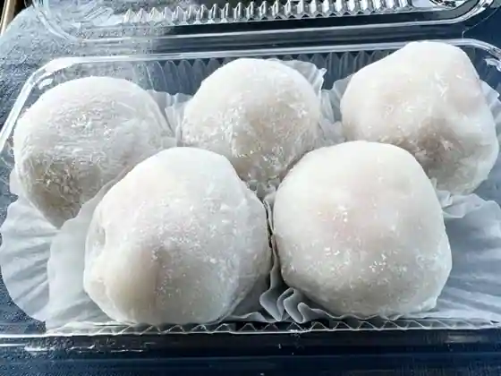
O Kashi Nozawa
Sights
Suigo Itako Ayame Sono

Roadside Station Itako

Itako (Ro Funasobi Ran)

Hakucho Village (Kitaura Lakeside)
Nagakatsu Tera

Tsugaru Kashi Ato Plaza
Suigo Kenmin Forest
Gongen Yama Park
Nihonmatsu Tera
Aiyu Shuzo (Kabu)
Suigo Kyuka Isoyama Tei
Tsuka Hon Soba Mise
Itako Kantorii Kurabu